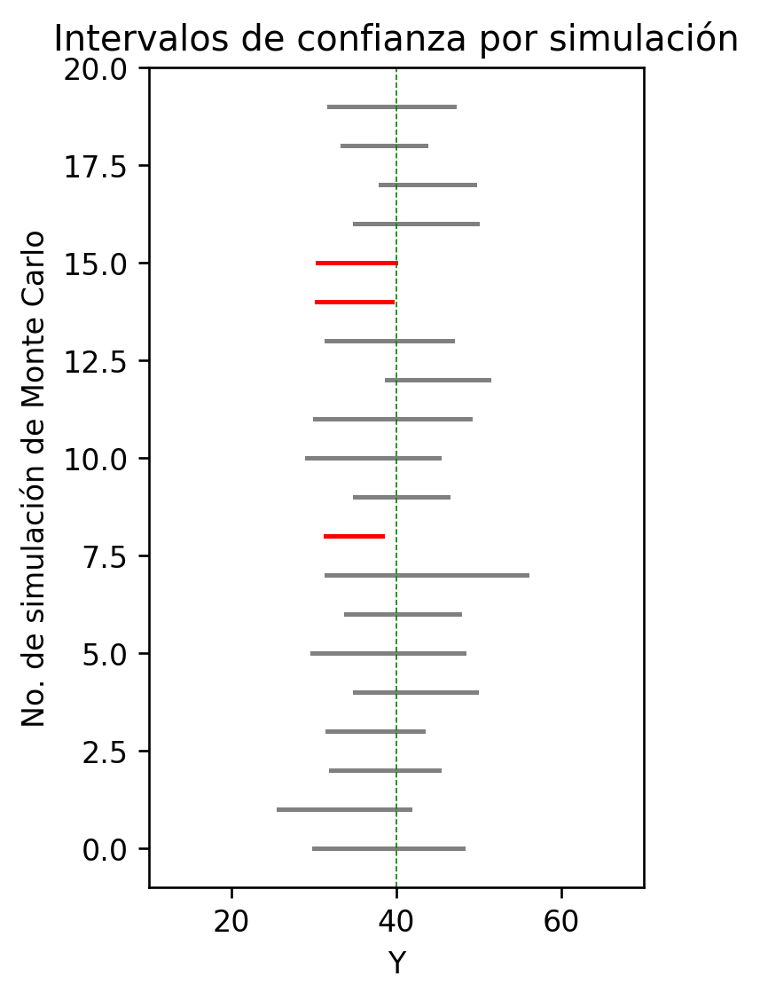

# Definimos el valor semilla (None = resultados distintos cada ejecución)semilla =None# Tamaño de muestran =10# Muestreo (una muestra desde la población chi-cuadrado)muestra = stats.chi2.rvs(m, size=n, random_state=semilla)# Promedio de la muestray_promedio = muestra.mean()print(f"Promedio de la muestra (línea verde): {y_promedio:.4f}")# Gráfico: observaciones y promedioplt.scatter(np.arange(1, n +1), muestra, label="Observaciones")plt.axhline(y_promedio, color="green", label="Promedio muestral")plt.ylabel("Y(i)")plt.xlabel("Individuo (i)")plt.legend(loc="upper center", bbox_to_anchor=(0.5, -0.12))plt.grid()plt.show()plt.close()
Promedio de la muestra (línea verde): 0.2948
WarningError común
Si quieres resultados reproducibles, no dejes semilla = None.
En ese caso, usa un entero (ej. semilla = 1).
2.3 Muchas muestras: distribución del promedio muestral
Aquí repetimos el muestreo r veces y guardamos los promedios en un array.
campana =True# si True, sobrepone una normal teóricalimites =None# si quieres un rango fijo, usa limites=(a, b)semilla =None# semilla basen =5# tamaño de muestrar =1000# número de replicacionespromedios = np.zeros(r)for j inrange(r): semilla2 = semilla if semilla isNoneelse semilla + j muestra = stats.chi2.rvs(m, size=n, random_state=semilla2) promedios[j] = muestra.mean()# Histograma de promediosplt.hist(promedios, bins=15, density=True, edgecolor="black", alpha=0.9, label="Distribución del promedio muestral")# Normal teórica aproximada (por TLC): N(E(Y), Var(Y)/n)if campana: EYp = EYi VYp = VYi / nif limites isNone: x = np.linspace(EYp -3*np.sqrt(VYp), EYp +3*np.sqrt(VYp), num=1000)else: x = np.linspace(*limites, num=1000) pdfx = stats.norm.pdf(x, EYp, np.sqrt(VYp)) plt.plot(x, pdfx, linewidth=3, label="Normal teórica (aprox.)")plt.ylabel("Densidad")plt.xlabel("Promedio muestral")plt.title("TLC: histograma del promedio muestral")plt.legend(loc="upper center", bbox_to_anchor=(0.5, -0.12))plt.show()plt.close()
NoteSintaxis clave (Monte Carlo)
np.zeros(r) reserva un array para guardar r resultados.
Dentro del bucle:
generas una muestra aleatoria,
calculas su promedio,
lo guardas en promedios[j].
TipTip: controla semillas por iteración
La línea semilla2 = semilla + j sirve para que cada réplica sea distinta, pero reproducible.
2.4 Ley de los grandes números (promedio vs n)
semilla =Nonenmax =1000promedios_nmax = np.zeros(nmax -2)for j inrange(2, nmax): muestra = stats.chi2.rvs(m, size=j, random_state=semilla) promedios_nmax[j -2] = muestra.mean()plt.plot(promedios_nmax)plt.axhline(EYi, color="red")plt.grid()plt.xlabel("Tamaño de muestra (n)")plt.ylabel("Promedio muestral")plt.title("Ley de los grandes números: promedio muestral → media poblacional")plt.show()plt.close()
3. Simulación de pruebas t e intervalos de confianza
Para inferencia con muestras, usa np.std(..., ddof=1) (desviación estándar muestral).
3.3 Prueba t (bilateral) y valor crítico
alpha =0.05mu0 = mu # H0 verdadera en este experimentoprueba_t = stats.ttest_1samp(muestra, popmean=mu0)valor_crit = stats.t.ppf(1- alpha/2, df=n -1)estadistico_t = prueba_t.statisticvalorp = prueba_t.pvalueprint(f"Estadístico t: {estadistico_t:.4f}\n")print(f"Valor crítico ({(1-alpha)*100:.2f}% confianza): {valor_crit:.2f}\n")print(f"Valor p: {valorp:.4f}")
Estadístico t: -0.2447
Valor crítico (95.00% confianza): 2.26
Valor p: 0.8122
NoteSintaxis clave
ttest_1samp(muestra, popmean=mu0) devuelve .statistic y .pvalue.
t.ppf(1 - alpha/2, df=n-1) es el cuantil bilateral para el valor crítico.
3.4 Intervalo de confianza e indicador “¿contiene mu?”
LI = promedio_m - valor_crit * error_estLS = promedio_m + valor_crit * error_estprint(f"IC al {(1-alpha)*100:.2f}%: [{LI:.2f}, {LS:.2f}]\n")print(f"¿El intervalo contiene a mu? {'Sí'if (mu >= LI and mu <= LS) else'No'}")
IC al 95.00%: [30.05, 48.01]
¿El intervalo contiene a mu? Sí
3.5 Monte Carlo: repetir r veces (p-values, error tipo I y cobertura)
mu =40sigma = np.sqrt(100)semilla =1n =10alpha =0.05mu0 = mur =20resultados_valores_p = np.zeros(r)resultados_error1 = np.zeros(r)resultados_LI = np.zeros(r)resultados_LS = np.zeros(r)resultados_intervalo_mal = np.zeros(r)for i inrange(r): semilla2 =Noneif semilla isNoneelse semilla + i muestra = stats.norm.rvs(mu, sigma, size=n, random_state=semilla2) promedio_m = np.mean(muestra) desv_est_m = np.std(muestra, ddof=1) error_est = desv_est_m / np.sqrt(n) prueba_t = stats.ttest_1samp(muestra, popmean=mu0) valor_crit = stats.t.ppf(1- alpha/2, df=n -1) valorp = prueba_t.pvalue resultados_valores_p[i] = valorpif valorp < alpha: resultados_error1[i] =1 LI = promedio_m - valor_crit * error_est LS = promedio_m + valor_crit * error_est resultados_LI[i] = LI resultados_LS[i] = LSif (mu < LI) or (mu > LS): resultados_intervalo_mal[i] =1tabla_valores_p = pd.DataFrame({"Valores p": resultados_valores_p,"Error Tipo 1": resultados_error1,"Lim inferior": resultados_LI,"Lím superior": resultados_LS,"¿No contiene mu?": resultados_intervalo_mal})print(f"{tabla_valores_p}\n"if r <=20else"Más de 20 simulaciones: omitimos tabla\n")print(f"Errores tipo I: {sum(resultados_error1)} de {r} ({sum(resultados_error1)/r*100:.2f}%)")print(f"Intervalos que NO contienen mu: {sum(resultados_intervalo_mal)} de {r} ({sum(resultados_intervalo_mal)/r*100:.2f}%)")
sum(resultados_error1)/r es una proporción (frecuencia relativa).
resultados_intervalo_mal marca cuando el IC falla en cubrir mu.
3.6 Visualizar intervalos de confianza (rojo = no cubre mu)
r_ej =20# debe ser <= rplt.figure(figsize=(3, 5))plt.xlim(10, 70)plt.ylim(-1, r_ej)for i inrange(r_ej): color ="grey"if (mu > resultados_LI[i] and mu < resultados_LS[i]) else"red" plt.plot([resultados_LI[i], resultados_LS[i]], [i, i], linestyle="-", color=color)plt.axvline(mu, linestyle="--", color="green", linewidth=0.5)plt.ylabel("No. de simulación de Monte Carlo")plt.xlabel("Y")plt.title("Intervalos de confianza por simulación")plt.show()plt.close()

Ejercicios propuestos
Semillas y reproducibilidad
Ejecuta dos veces una simulación con semilla=None y luego con semilla=1.
Respuesta esperada: con None obtienes resultados diferentes; con 1 obtienes resultados idénticos.
TLC: cambia n
Repite la simulación de promedios con n=5, n=30 y n=100.
Respuesta esperada: el histograma del promedio se vuelve cada vez más parecido a una normal.
Ley de grandes números
Aumenta nmax y mira el gráfico del promedio.
Respuesta esperada: la serie se estabiliza alrededor de E(Y)=m.
Error tipo I con más r
Cambia r a 500 o 1000 y calcula la proporción sum(error1)/r.
Respuesta esperada: la proporción se acerca a alpha (≈ 0.05).
Cobertura del IC
Con r=1000, calcula 1 - sum(intervalo_mal)/r.
Respuesta esperada: la cobertura se acerca a 1-alpha (≈ 0.95).
Exploración
Cambia n de 10 a 30 en la simulación t.
Respuesta esperada: los intervalos se vuelven (en promedio) más estrechos y la cobertura se mantiene cercana a 0.95.